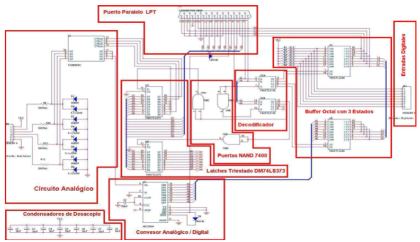

El circuito de control es la parte más delicada de la controladora, ya que se encarga de controlar la entradas
(Puerto LPT, Entradas Analógicas, Entradas Digitales y circuito de potencia) y las salidas (Salidas Digitales).

El circuito de control de la controladora CNICE está divido en varios bloques que más adelante serán explicados en profundidad:
El primer bloque es el circuito analógico que sirve para poder manejar componentes analógicos de baja potencia por ejemplo
una resistencia LDR. Este bloque está formado por cuatro entradas analógicas A0 a A3, cuyo valor es regulado por el
dispositivo de entrada hasta un máximo de 5 voltios.
El segundo bloque es el circuito digital que se puede dividir en otros bloques de nivel inferior:
Bloque de control de habilitaciones: es el encargado de activar y desactivar las habilitaciones de los integrados.
Bloque de control de datos: esta parte del circuito se encarga de manejar los datos de entrada y de salida. En este
bloque también entraría los conectores de entrada y de salida de datos (ocho entradas digitales E0 a E7, cuyo valor
lógico pasa de 0 a 1 cuando se conectan a 5 voltios y ocho salidas digitales S0 a S7, de valor 0 ó 5 voltios).